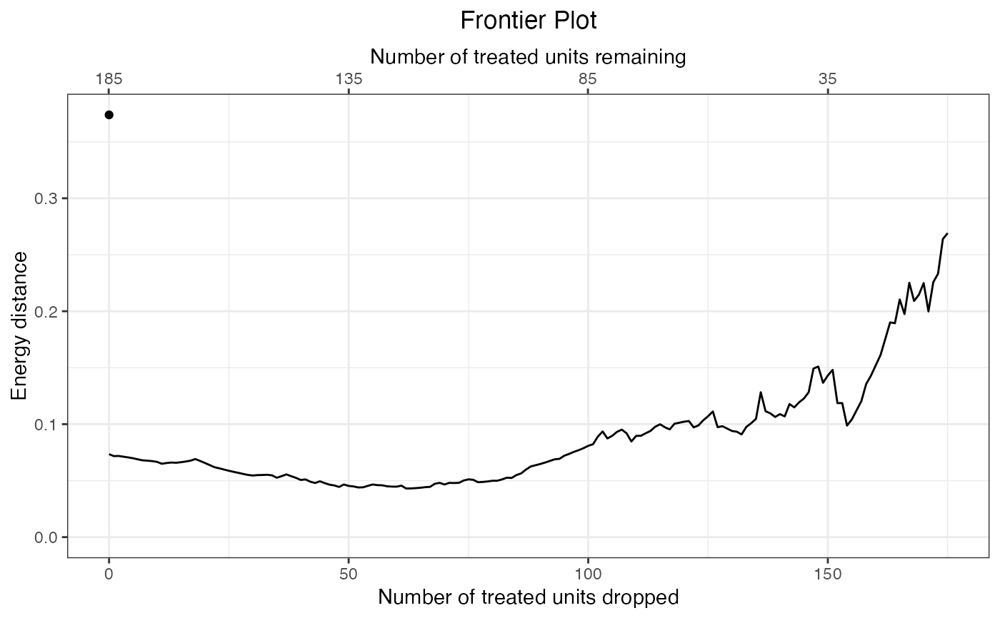
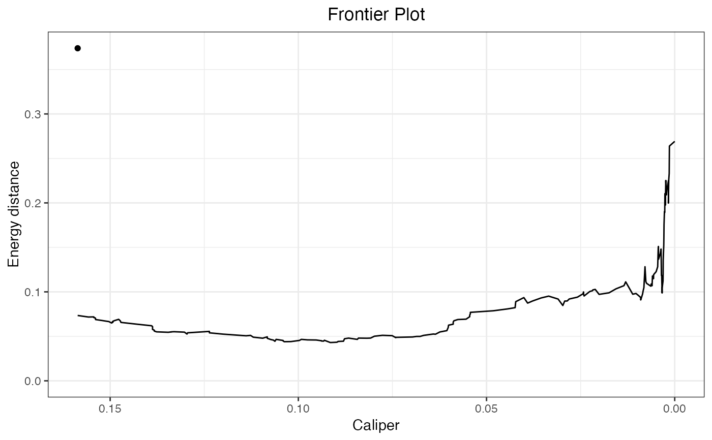

matchit objectmakeFrontier.matchit.RdmakeFrontier() computes the balance-sample size frontier for a matchit object aftr 1:1 matching. The frontier corresponds to the relationship between the number of matched pairs dropped and the resulting balance in the matched sample. When the propensity score is used to match, this can also correspond to the realtionship between the width of a hypothetical caliper on the propensity score and the resulting balance. This helps identify the optimal caliper and determine whether the propensity score paradox described in King and Nielsen (2019), in which tightening the caliper worsens balance, is in effect.
# S3 method for matchit
makeFrontier(x,
metric = 'dist',
breaks = NULL,
distance.mat = NULL,
data = NULL,
verbose = TRUE, ...)a matchit object; the output of a call to MatchIt::matchit() in which 1:1 matching (with or without replacement) was used.
the imbalance metric under consideration; allowable options include 'dist', 'L1', 'L2', and 'energy'. See makeFrontier(). Default is 'dist'.
when metric is 'L1' or 'L2', a named list containing a single number giving the number of bins for each or a string corresponding to a method of computing the number of bins for each covariate. See makeFrontier() for allowable options. Ignored for other metrics.
when metric is 'dist' or 'energy', the distance measure used to define the distance between units. The default for metric = 'dist' is "mahalanobis" and for metric = 'energy' is "scaled_euclidean". See makeFrontier(). Abbreviations allowed. Ignored for other metrics.
an optional data frame containing the variables used in the original matching. In most cases, does not need to be specified, but it is always safer if it is. Passed to match.data().
logical; whether to print additional information about the frontier constructing process.
arguments passed to other methods (ignored).
makeFrontier.matchit() creates a balance-sample size "frontier" from the supplied matchit object by dropping pairs one-by-one based on the distance between them and computing a balance statistic at each point. Unlike other frontiers, which are formed by dropping units that lower the imbalance measure the most, matchit frontiers are formed by dropping pairs with the greatest distance between them, where the distance corresponds to the distance used to initially create the matches in matchit() (i.e., the porpensity score difference or Mahalanobis distance, whichever is requested). This is similar to progressively applying a tighter and tighter caliper and considering how balance changes as the caliper is tightened. Because of this, imbalance may increase as pairs are dropped; indeed, this is the phenomenon this function is used to examine.
makeFrontier.matchit() is only compatible with matchit objects that result from performing 1:1 matching (with or without replacement), which includes after using method = "nearest", method = "optimal", or method = "genetic" in matchit() with ratio = 1. The distance argument to matchit() cannot have been a matrix, but can be a numeric vector corresponding to propensity scores or a string requesting propensity scores or a distance matrix. When the mahvars argument is used to perform Mahalanobis distance matching (with a propensity score otherwise estimated), the propensity score difference is used to determine the order the pairs will be dropped.
Because the frontier is computed using the existing matched dataset, manually creating a frontier by progressively tightening the caliper may not yield the same results unless matching with replacement. When a caliper is supplied to matchit(), the resulting matched sample will have the caliper applied already, so makeFrontier() will only produce the frontier for calipers more restrictive than the one used in the original matching.
makeFrontier.matchit() extracts the treatment, covariates, propensity score (if any), and estimand (QOI) from the supplied matchit object. If Mahalanobis distance matching was used, the Mahalanobis distance between members of each pair is re-computed. The user must specify which imbalance metric is to be used to assess balance in the resulting matched sample (and any other arguments used to compute it). Because both members of each pair are progressively dropped, the estimand after dropping some pairs corresponds to the "feasible" average treatment effect (in the treated); see makeFrontier() for more details.
The covariates used to compute the imbalance metrics are those extracted from the matchit formula using all.vars(); that is, if, e.g., log(X) is present in the model formula, X will be used in computing the imbalance metric, not log(X).
A MatchItfrontier object, which inherits from matchFrontier.
the matching frontier, which contains four components:
drop.order: a list containing the indices of the units dropped at each point on the frontier. The first entry will be empty, indicating that no units have been dropped.
Xs: a vector containing the cumulative number of units dropped at each point on the frontier. The first value will be 0.
Ys: a vector containing the value of the imbalance metric at each point on the frontier.
Y.origin: for bin- and energy-based frontiers, the value of the imbalance metric prior to matching (i.e., before the first point on the frontier).
the name of the treatment variable.
the QOI; here, "FSATT".
the argument supplied to metric.
the dataset containing the units. This is the result of call MatchIt::match.data() on the matchit object with drop.unmatched = FALSE.
a vector of the names of the covariates used in the matching.
the indices of the units to which each unit is paired. Control units will have NA values. This is formed by processing the match.matrix component of the matchit object.
the pairwise distances between each pair of units use in the original matching. When propensity score matching is used, these values are scaled by the standard deviation of the propensity score. Note this is different from (but is computed from) the distance component in the supplied matchit object, which contains the propensity scores, and is totally distinct from the distance.mat argument.
the original call to makeFrontier().
the number of treated units present at the first point in the frontier.
King, G., Lucas, C., & Nielsen, R. A. (2017). The Balance-Sample Size Frontier in Matching Methods for Causal Inference. American Journal of Political Science, 61(2), 473-489. doi:10.1111/ajps.12272
King, G., & Nielsen, R. (2019). Why Propensity Scores Should Not Be Used for Matching. Political Analysis, 1-20. doi:10.1017/pan.2019.11
# Help pages for other matchit methods
makeFrontier() for creating frontiers without MatchIt
plot.matchFrontier() for plotting the frontier.
estimateEffects() for estimating effects along the frontier.
vignette("MatchingFrontier") for a worked example.
data("lalonde", package = "MatchIt")
#1:1 nearest neighbor propensity score matching
#without replacement
m.out <- MatchIt::matchit(
treat ~ age + educ + married + re74,
data = lalonde, method = "nearest",
ratio = 1, replace = FALSE
)
m.out
#> A matchit object
#> - method: 1:1 nearest neighbor matching without replacement
#> - distance: Propensity score
#> - estimated with logistic regression
#> - number of obs.: 614 (original), 370 (matched)
#> - target estimand: ATT
#> - covariates: age, educ, married, re74
#Assess the energy distance as pairs are dropped
fm <- makeFrontier(m.out, metric = "energy")
#> Computing distance matrix...
#> Calculating frontier...
#> Done!
fm
#> A matchFrontier object
#> - quantity of interest: FSATT
#> - imbalance metric: energy distance
#> - treatment: treat
#> - covariates: age, educ, married, re74
#> - number of points: 176
plot(fm)

plot(fm, axis = "caliper")
